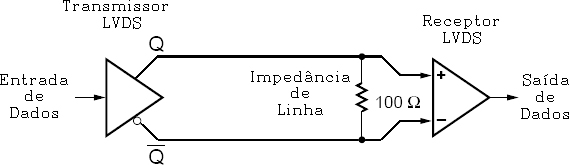
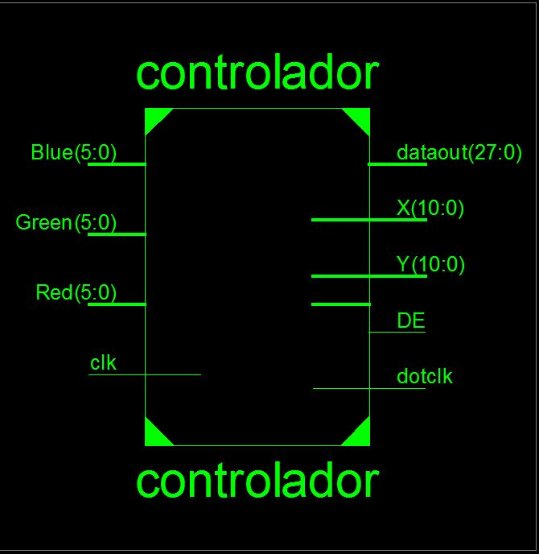
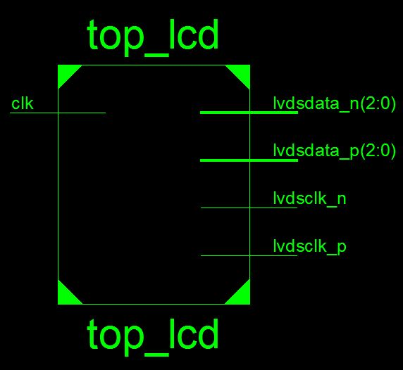
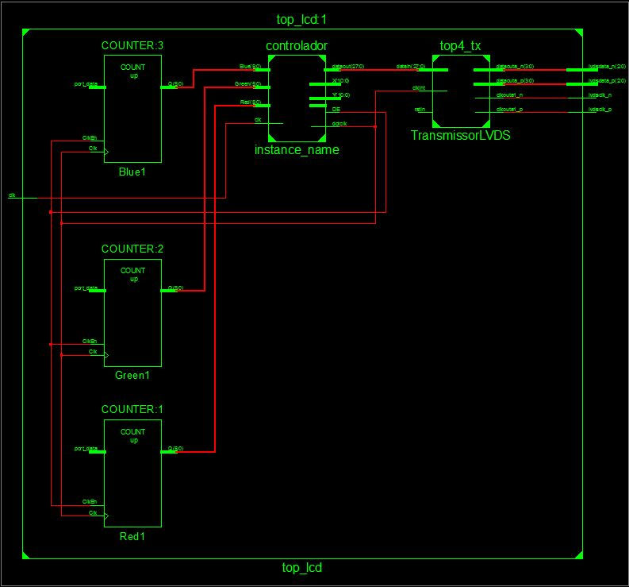

Sumário
1 - O Sinal LVDS 1
2 – Serializador LVDS
3 – Serializador LVDS de Vídeo (Tela de LCD)
4 – Designação de Pinos no LCD
5 – Programando o Gerador de Sincronias
6 – Escrevendo o código do Gerador de Sincronias
7 – Modificando o Serializador 7:1 XAPP486 da Xilinx
8 – Criando o modelo do topo e um gerador de escala de cinza
9 – Resultados
Estou iniciando este documento para auxiliar pessoas que queiram controlar Telas de LCD com Interface LVDS (Como as de notebook ou de computadores atuais), pois tive uma certa dificuldade devida a falta de documentação adequada na internet.
Para iniciar começarei explicando como funciona o Sinal LVDS.
O LVDS (Low Voltage Differential Signal ou Sinal Diferencial de Baixa Tensão) é um sinal transmitido aos pares (um positivo e outro negativo). Porém ao contrário dos sinais normais, onde um dos fios é GND (0V) e outro é o sinal, ou seja, um estático e outro dinâmico, o LVDS tem os dois pares com sinal. Porém um invertido do outro (enquanto um está em nível lógico 1, o outro está em nível lógico 0).
Abaixo vai um esquema básico de um transmissor LVDS:

O transmissor LVDS apenas transmite um sinal invertido do outro. O Receptor efetua a subtração dos dois sinais (A – B), como o B é sempre o inverso de A, a operação a ser feita é A - (-A) = A + A = 2A. Sendo assim, na saída teremos sempre o Sinal A . O par do LVDS é traçado dentro do cabo que transmite o sinal, devido a isso, caso os fios peguem algum ruído de algum condutor próximo, ou ondas eletromagnéticas, ambos fios pegaram a mesma intensidade de sinal. Quando o receptor for efetuar a subtração ele fara R – R = 0, logo o ruído será eliminado. Isso possibilita transmissões com clocks muito mais elevados do que com fios comuns.
Para efetuar transmissões de múltiplos bits numa mesma linha LVDS, é usado um Serializador. O papel do serializador, é coletar os bits em paralelo (ou seja, todos ao mesmo tempo) e os transmiti-los em serial, ou, um a um.
No caso do Serializador LVDS não é muito diferente, porém além das linhas de dados (Canais) há uma linha de clock (PLL Clock). Esse clock serve para sincronizar o receptor com o transmissor.
Bom, agora vamos ao que realmente importa para nós! Como funciona a interface do LCD.
O LCD que usei para brincar aqui era de 18Bit. Os LCD de 18 bit tem interface de 20 Pinos e as designações dos pinos são padrões. São 3 Canais de dados e um clock. A serialização é feita 7-para-1, ou seja, cada canal comporta 7 bits. Logo serão 21 Bits de dados para o lcd.
O LCD tem interface digital, e esses com 18 bits de cores tem 6 bits para cada cor e 3 bits de controle (DE, HSync, VSync – Respectivamente Dado Válido, Sincronia Horizontal, Sincronia Vertical), totalizando 21 Bits (ou seja 3 Canais).
Ao contrario dos LCDs antigos de interface paralela, esses não tem o Dot Clock (Clock de Píxel) separado, pois eles usam a linha de clock, como clock do pixel. Para que os 21 Bits sejam transmitidos em tempo real (Ou ao menos, a cada Clock de Píxel), é necessário transmiti-los a uma velocidade maior, no caso 7 vezes (pois são 7 bits por canal) do que o clock de entrada. Porém o uso de Flip-flops DDR (Double Data Rate, ou seja, que acionam na subida e descida do clock), podemos usar apenas metade dessa velocidade, ou seja, 3.5 vezes.
O clock transmitido pela linha LVDS será o Dot Clock original, porém com o Duty Cycle (Ciclo de Trabalho) alterado de uma relação 1:1 do nível alto para o baixo, para uma relação de 4:3. Os dados serão transmitidos a 7x a velocidade do Dot Clock. Assim no receptor do LCD, será multiplicado o Dot Clock para poder receber os dados em paralelo também, completando o ciclo de dados pelas linhas LVDS.
Abaixo vai um desenho da transmissão LVDS, repare o Duty Cycle em 4:3:
Repare na figura acima, que são transmitidos primeiros os bits mais altos (MSB), e também que os dados começam nas duas ultimas partes do nível alto do clock, e terminam nas duas primeiras. Abaixo vai outro esquema, porém este é com os detalhes interessantes para o nosso uso:
Outro ponto que demorei um tempinho pra perceber (na verdade demorei algumas telas de lcd para perceber hehe), é a questão da pinagem do LCD. Com tempo reparei que todos os LCD que eram 18bit de cores tinham 20 pinos. E analisando 3 LCDs diferentes vi que as pinagens eram iguais. Segue abaixo os modelos que testei e a pinagem:
LQ141X1LH82 (Sharp 14.1'' 1024x768) – Chip Receptor Sharp KZ4E028615
LQ150X1LH93 (Sharp 15'' 1024x768) – Chip Receptor Sharp KZ4E028615
QD15XL06 (Quanta 15'' 1024x768) Pinagem:
1 - VCC (3.3V)
2 - VCC (3.3V)
3 - GND
4 - GND
5 - Rx0_N
6 - Rx0_P
7 - GND
8 - Rx1_N
9 - Rx1_P
10 - GND
11 - Rx2_N
12 - Rx2_P
13 - GND
14 - CLK_N
15 - CLK_P
16 - GND
17 - NC
18 - NC
19 - GND
20 - GND
Os dois pinos Não Conectados (17 e 18) me parecem ser o 4 canal para as telas de 24bit, como todas que eu tinha aqui eram 18, todas elas não estavam conectadas.
Reparem que toda linha LVDS está com dois GND em volta. Isso é uma característica que sempre existirá nas placas de LCD. Caso você não tenha certeza da pinagem, você pode observar na placa do seu LCD, pois as linhas LVDS sempre estarão com GND em volta.
O Gerador de sincronia serve para gerar os sinais de Sincronia Vertical, Horizontal e também o DE (Data Enable). O sinal de Sincronia Horizontal serve para o LCD ir para a próxima linha, e o de vertical serve para ele retornar para o início da tela. O LCD grava os 18 bits de cores em uma memória RAM interna a cada ciclo do Clock. Então precisamos apenas gerar os sinais de sincronia vertical e horizontal.
Infelizmente o LCD demora um pouco pra trocar de linha e também para voltar para o início da tela, então temos que dar uma “pausa” entre as linhas e entre as telas. Nada que seja um problema.
Iremos fazer dois Contadores. Um ContadorX, que irá contar as colunas, e outro, ContadorY que irá contar as linhas. As minhas telas de teste eram todas 1024x768 (1024 colunas por 768 linhas), o que da 786432 pixels. Uma atualização de tela comum fica em torno de 60Hz, para 786432 pixels temos uma sincronia horizontal de aproximadamente 46kHz, e que por sua vez nos dá um dot clock de aproximadamente 47MHz. ( 768 linhas * 60 = 46k, 46k * 1024 = 47MHz).
Na placa tenho disponível um clock de 16Mhz, e como ainda tempos que dar uma “pausa” entre as linhas e as telas, usarei o clock multiplicado por 4, ou seja, 64Mhz, o que nos deve dar uma atualização de tela de 81Hz aproximadamente e uma sincronia horizontal de 62,5kHz.
Obs: Os sinais de sincronia são todos ativados com a passagem por 0, logo por padrão eles
Para as pausas, fiz uma média entre uns datasheets de telas de LCD que achei. O ContadorX será incrementado a cada ciclo de 64MHz. Após o ContadorX chegar a 1023 (final da linha, lembrando que o contador começa em 0), colocaremos o HSync em 0, e esperaremos 280 pixels para colocarmos em 1. Esperaremos mais 20 pixels e faremos a incrementação do ContadorY, e mais 20 pixels após a incrementação do ContadorY para resetar o ContadorX. Para a incrementação do ContadorY. Quando o ContadorY chegar a 767 (final da tela) colocaremos o VSync em 0 e esperaremos 35 linhas para coloca-lo em 1 novamente. O DE ficará em 0 toda vez que os Contadores estiverem fora dos limites da tela (ou seja, quando ContadorX passar de 1023 ou ContadorY passar de 767).
Com as configurações acima, consegui fazer todos os lcds funcionarem sem problemas aqui. Fazendo os cálculos das sincronias novamente para 1344 colunas e 803 linhas teremos 47kHz de Sincronia Horizontal e 59Hz de Sincronia Vertical. Bem próximo do que queríamos. Vamos então começar a escrever o código.
Crie um arquivo no Xilinx ISE em Verilog HDL, com as seguintes entradas e saídas:
input clk, // Entrada do clock de 16Mhz
output dotclk, // Saída do Clock de 64Mhz
output DE, // Saída do Data Enable
input [5:0] Red, // Entrada de 6 bits da cor vermelha
input [5:0] Green, // Entrada de 6 bits da cor vermelha
input [5:0] Blue, // Entrada de 6 bits da cor vermelha
output [27:0] dataout,// Saída de 27 Bits para o Serializador
output [10:0] X, // Saída de 11 bits para posição X
output [10:0] Y // Saída de 11 bits para posição Y
Após isso, vamos criar o DCM para multiplicar o clock de 16MHz de entrada para 64Mhz.
wire clo,clk4x;
DCM_SP#(
.CLKIN_PERIOD ("62.5"),// 62.5 ns = 16Mhz
.CLKFX_MULTIPLY (4)
)
dcm_main (
.CLKIN (clk),
.CLKFB (clo),
.RST (1'b0),
.CLK0 (clo),
.CLKFX (clk4x)
);
defparam dcm_main.CLKIN_PERIOD = 62.5;
defparam dcm_main.CLKFX_MULTIPLY = 4;
defparam dcm_main.CLKFX_DIVIDE = 1;
Feito isso, teremos 64Mhz no fio clk4x. Criaremos agora dois parâmetros com o tamanho da tela, para que o controlador seja flexível. Também criaremos os registradores que iremos usar no controlador.
parameter ScreenX = 1024; // Número de colunas
parameter ScreenY = 768; // Número de linhas
reg [10:0] ContadorX = 0; // Contador de colunas 2048 max
reg [10:0] ContadorY = 0; // Contador de linhas 2048 max
reg HSync = 1; // Sincronia Horizontal
reg VSync = 1; // Sincronia Vertical
reg data_enable = 1; // Data Enable
wire [27:0] lcddata; // Dados do LCD
Temos agora tudo que precisamos para fazer o ciclo para incrementar os contadores e gerar as sincronias. Vamos então ao código abaixo:
always @(posedge clk4x)
begin
ContadorX <= ContadorX + 1; // Incrementa o ContadorX a cada ciclo
if((ContadorX == 0) & (ContadorY < ScreenY))
data_enable <= 1;//Todo novo começo de linha, caso a linha
//esteja nos limites da tela, o DE será ativado
if(ContadorX == ScreenX)
begin
//Primeiro ponto da sincronia vertical, deixando o DE e HSync em 0.
data_enable <= 0;
HSync <= 0;
end
if(ContadorX == (ScreenX+280))
HSync <= 1; //Após 280 pixels, ativamos novamente o HSync
if(ContadorX == (ScreenX+300))
begin
//Após 20 Pixels da ativação do HSync, faremos a incrementação do ContadorY
if(ContadorY == ScreenY)
begin
//Caso ContadorY tenha chegado ao final da tela, colocamos o DE e VSync
//Em 0
VSync <= 0;
data_enable <= 0;
end
if(ContadorY == (ScreenY+35))
begin
//Após 35 linhas, Colocamos o VSync em 1, e resetamos os contadores.
VSync <= 1;
ContadorY <= 0;
ContadorX <= 0;
end
else
ContadorY <= ContadorY +1; // Caso não tenha chegado ao fim, incrementao ContadorY
end
if(ContadorX == (ScreenX+320))
ContadorX <= 0; //Após 20 pixels da incrementação do ContadorY, resetar oContadorX
end
Temos ai então o gerador de sincronia pronto! Agora é só fazer as associações.
assign dotclk = clk4x; // Clock para sincronizar transmissor de imagem
assign X = ContadorX; //Valores para saber a posição da tela
assign Y = ContadorY; //Valores para saber a posição da tela
Porém, tive um pequeno problema. O serializador da Xilinx XAPP486 transmite os dados de uma forma diferente do que precisamos:
O XAPP486 da Xilinx envia os dados assim:
0, 4, 8, 12, 16, 20, 24 - Canal 0
1, 5, 9, 13, 17, 21, 25 - Canal 1
2, 6, 10, 14, 18, 22, 26 - Canal 2
3, 7, 11, 15, 19, 23, 27 - Canal 3
Porém, para o LCD precisamos deles assim:
6, 5, 4, 3, 2, 1, 0 - Canal 0
13, 12, 12, 10, 9, 8, 7 - Canal 1
20, 19, 18, 17, 16, 15, 14 - Canal 2
X, X, X, X, X, X, X - Canal 3
>Nota: X <= Irrelevante
Então fiz aqui uma associação da maneira que eu precisava.
assign dataout[0] = lcddata[6]; //
assign dataout[4] = lcddata[5]; //
assign dataout[8] = lcddata[4]; //
assign dataout[12] = lcddata[3]; //Canal 0
assign dataout[16] = lcddata[2]; //
assign dataout[20] = lcddata[1]; //
assign dataout[24] = lcddata[0]; //
assign dataout[1] = lcddata[13]; //
assign dataout[5] = lcddata[12]; //
assign dataout[9] = lcddata[11]; //
assign dataout[13] = lcddata[10]; // Canal 1
assign dataout[17] = lcddata[9]; //
assign dataout[21] = lcddata[8]; //
assign dataout[25] = lcddata[7]; //
assign dataout[2] = lcddata[20]; //
assign dataout[6] = lcddata[19]; //
assign dataout[10] = lcddata[18]; //
assign dataout[14] = lcddata[17]; // Canal 3
assign dataout[18] = lcddata[16]; //
assign dataout[22] = lcddata[15]; //
assign dataout[26] = lcddata[14]; //
assign dataout[3] = 1'b0; //
assign dataout[7] = 1'b0; //
assign dataout[11] = 1'b0; //
assign dataout[15] = 1'b0; // Canal 4 - Porém irrelevante
assign dataout[19] = 1'b0; //
assign dataout[23] = 1'b0; //
assign dataout[27] = 1'b0; //
Agora podemos fazer a associação de maneira mais facil:
assign lcddata [20:18] = { data_enable , VSync, Hsync}; // Bit 20, 19, 18
assign lcddata [17:0] = {Blue, Green, Red}; // Bits 17 à 0
assign DE = data_enable; // Saída Data Enable
Terminamos aqui o controlador do LCD. Abaixo vai o desenho do modelo:

Como havia dito no tópico anterior, o XAPP486 envia os sinais para o LCD de maneira diferente do que precisamos, então tivemos que associar os bits. Mas além disso, outras alterações são necessárias para o uso dele. Baixe o XAPP486 aqui.
Adicione ele ao projeto e faça as seguintes modificações:
No arquivo: top4_tx
Modificar Linha:
input clkin,// clock in
para
input clkint, // clock in
Remover Linha:
wire clkint ; // clock input from pin
Remover Linha:
IBUFG #(.IOSTANDARD("LVCMOS25")) clk_ibuf (.I(clkin), .O(clkint) );
Alterar:
.CLKIN_PERIOD ("12"),
para
.CLKIN_PERIOD ("15.625"),
OBUFDS#(.IOSTANDARD("LVDS_25"))
para
OBUFDS#(.IOSTANDARD("LVDS_33"))
OBUFDS#(.IOSTANDARD("LVDS_25")) lvds_clka_obuf (.I(clkoutint), .O(clkouta1_p), .OB(clkouta1_n) );
para
OBUFDS #(.IOSTANDARD("LVDS_33")) lvds_clka_obuf (.I(clkoutint), .O(clkouta1_p), .OB(clkouta1_n) );
No arquivo serdes_4b_7to1
Remover Linhas:
assign clkcp_d = (~pba[2] & ~pba[1] & pba[0]) | (~pba[2] & pba[1] & ~pba[0]) | (pba[2] & ~pba[1] & pba[0]) ; // Use these two lines for 3:4 output clock
assign clkcn_d = (~pba[2] & ~pba[1] & pba[0]) | (pba[2] & ~pba[1] & ~pba[0]) | (pba[2] & ~pba[1] & pba[0]) ;
Descomentar Linhas:
assign clkcp_d = (~pba[2] & ~pba[1] & pba[0]) | (~pba[2] & pba[1] & ~pba[0]) | (pba[2] & ~pba[1] & pba[0]) | (pba[2] & pba[1] & ~pba[0]) ; // Use these two lines for 4:3 output clock
assign clkcn_d = (~pba[2] & ~pba[1] & pba[0]) | (~pba[2] & pba[1] & ~pba[0]) | (pba[2] & ~pba[1] & pba[0]) | (pba[2] & ~pba[1] & ~pba[0]) ;
Salve tudo, terminamos as modificações no XAPP486. Abaixo vai um modelo do serializador:
Agora que terminamos toda a base, podemos modelar o desenho de topo, onde ficarão as ligações entre o serializador e o gerador de sincronias. Faremos também um gerador de escala de cinza para testar se tudo ocorre bem. Crie um arquivo verilog chamado top_lcd com as seguintes entradas e saídas:
input clk, // Entrada do clock de 16Mhz
output [2:0] lvdsdata_p, // Saídas Positivas dos 3 canais
output [2:0] lvdsdata_n, // Saídas Negativas dos 3 Canais
output lvdsclk_p, // Saída Positiva do Clock
output lvdsclk_n // Saída Negativa do Clock
Criaremos também os fios para ligar os modelos e os registradores para o gerador de escala de cinza.
wire dotclk;
wire [27:0] ParallelData;
wire [10:0] X;
wire [10:0] Y;
wire [5:0] DRed;
wire [5:0] DGreen;
wire [5:0] DBlue;
wire DEnable;
reg [5:0] Red = 0;
reg [5:0] Green = 0;
reg [5:0] Blue = 0;
Vamos agora inicializar os modelos do XAPP486 e do Controlador:
top4_tx TransmissorLVDS (
.clkint(dotclk),
.datain(ParallelData),
.rstin(1'b1),
.dataouta_p(lvdsdata_p),
.dataouta_n(lvdsdata_n),
.clkouta1_p(lvdsclk_p),
.clkouta1_n(lvdsclk_n)
);
controlador ControladorLCD (
.clk(clk),
.dotclk(dotclk),
.DE(DEnable),
.Red(Red),
.Green(Green),
.Blue(Blue),
.dataout(ParallelData),
.X(X),
.Y(Y)
);
Feito isso, estará inicializado, repare que no bloco Hierarchy do Xilinx ISE, os códigos verilog irão para dentro do top_lcd.
Para finalizarmos faremos o gerador de escala de cinza. É algo bem simples, iremos tratar as cores como se fossem contadores, incrementando um a cada Dot Clock. Fazendo isso teremos colunas de escala de cinza de 64 pixels de largura. Faremos aqui também as associações.
always @(posedge dotclk)
begin
if(DEnable)
begin
Red <= Red +1;
Green <= Green +1;
Blue <= Blue +1;
end
end
assign DRed = Red;
assign DGreen = Green;
assign DBlue = Blue;
Feito isso, a ultima parte do nosso código está pronta! Segue o modelo e seu sub-circuito:


Agora é só configurar os pinos de acordo com sua placa de desenvolvimento e testar!
Abaixo vai imagens dos resultados e um link para baixar o projeto completo:
Links para o projeto
Outros documentos para consulta:
https://secure.xilinx.com/webreg/clickthrough.do?cid=55785&license=RefDesLicense - XAPP486
http://www.latticesemi.com/dynamic/view_document.cfm?document_id=21823 - Lattice Reference
http://www.intel.com/design/intarch/papers/315975.pdf - Intel LVDS Panel Connectors

A obra Controlando um LCD LVDS com FPGA de Lucas Teske - EnergyLabs Brasil foi licenciada com uma Licença Creative Commons - Atribuição - Partilha nos Mesmos Termos 3.0 Não Adaptada.
Permissões adicionais ao âmbito desta licença podem estar disponíveis em http://www.energylabs.com.br.